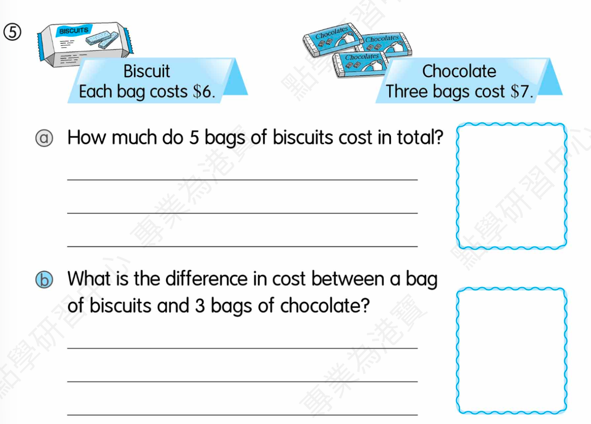

____ students want to be nurses.
Answer:
已掌握
| # | 中文意思 | 例句/提示 | 英文默写 | 已掌握 |
|---|---|---|---|---|
| noun 名词 | ||||
| 1 | 操场；游乐场 | The children run in the . | ||
| 2 | 礼物 | I got a . | ||
| 3 | 小组 | We work in a . | ||
| 4 | 分钟 | Please wait a . | ||
| 5 | 爪子 | The cat has a sharp . | ||
| 6 | 心 | My beats fast. | ||
| 7 | 小学生 | The reads a book. | ||
| 8 | 晚饭 | We eat at home. | ||
| phrase 短语 | ||||
| 9 | 数学计算 | We in math class. | ||
| 10 | 留在家里 | We on rainy days. | ||
| adjective 形容词 | ||||
| 11 | 贫穷的 | The family needs help. | ||
| 12 | 小的 | I can use in class. | ||
| 13 | 礼貌的 | I can use in class. | ||
| 14 | 漂亮的 | The flower is . | ||
| pronoun 代词 | ||||
| 15 | 它们 | I can see in the garden. | ||
| possessive adjective 物主代词 | ||||
| 16 | 他们的 | bags are blue. | ||
| noun/verb 名词/动词 | ||||
| 17 | 锻炼 | is good for health. | ||
| verb phrase 动词短语 | ||||
| 18 | 去徒步 | We on Sunday. | ||
| verb/noun 动词/名词 | ||||
| 19 | 改变，找零 | I can my answer. | ||
| uncategorized 未分类 | ||||
| 20 | 大海 | I can use in class. | ||
| # | 单词/词组 | 中文意思 | 例句/说明 | 已掌握 |
|---|---|---|---|---|
| adjective 形容词 | ||||
| 1 | delicious | The soup is delicious. | ||
| noun 名词 | ||||
| 2 | pronoun | He is a pronoun. | ||
| 3 | buffet | We had lunch at a buffet. | ||
| 4 | genie | The genie grants a wish. | ||
| 5 | housewife | The housewife is cooking. | ||
| 6 | dust | I can use dust in class. | ||
| 7 | blog | I can use blog in class. | ||
| 8 | pond | There is a small pond in the park. | ||
| 9 | guitar | She plays the guitar. | ||
| 10 | musical | I can use musical in class. | ||
| 11 | moral | The story has a moral. | ||
| 12 | musician | The musician plays music. | ||
| 13 | roundabout | The roundabout is in the playground. | ||
| 14 | festival | We go to the festival. | ||
| 15 | timetable | The timetable shows my classes. | ||
| verb 动词 | ||||
| 16 | match | I can use match in class. | ||
| phrase 短语 | ||||
| 17 | Causeway Bay | I can use Causeway Bay in class. | ||
| uncategorized 未分类 | ||||
| 18 | instruction | I can use instruction in class. | ||
| 19 | teenager | I can use teenager in class. | ||
| 20 | solve | I can use solve in class. | ||
| 21 | matter | I can use matter in class. | ||
| 22 | thought | I can use thought in class. | ||
| 23 | line | I can use line in class. | ||
| 24 | assessment | I can use assessment in class. | ||
| 25 | mid-year | I can use mid-year in class. | ||
| 26 | suitable | I can use suitable in class. | ||
| 27 | improvement | I can use improvement in class. | ||
| 28 | shout | I can use shout in class. | ||
| 29 | model | I can use model in class. | ||
| adverb 副词 | ||||
| 30 | accidently | I can use accidently in class. | ||
| # | 中文意思 | 例句/提示 | 英文默写 | 已掌握 |
|---|---|---|---|---|
| time/date 时间日期 | ||||
| 1 | 七月 | is the seventh month. | ||
| 2 | 十月 | is the tenth month. | ||
| 3 | 星期二 | is a weekday. | ||
| 4 | 星期三 | is a weekday. | ||
| 5 | 星期六 | is a weekend day. | ||
| time unit 时间单位 | ||||
| 6 | 年 | A has 12 months. | ||
| 7 | 时 | An has 60 minutes. | ||
| directions 方向 | ||||
| 8 | 西 | The sun sets in the . | ||
| numbers 数字 | ||||
| 9 | 4 | is 4. | ||
| 10 | 20 | is 20. | ||
| 11 | 70 | is 70. | ||
| 12 | 千 | One is 1000. | ||
| ordinal numbers 序数 | ||||
| 13 | 第二 | This is the shape. | ||
| 14 | 第三 | This is the shape. | ||
| solid shape 立体图形 | ||||
| 15 | 曲面 | A cylinder has a . | ||
| # | 单词/词组 | 中文意思 | 例句/说明 | 已掌握 |
|---|---|---|---|---|
| operations 运算 | ||||
| 1 | addition | Addition means putting numbers together. | ||
| 2 | subtraction | Subtraction means taking away. | ||
| 3 | altogether | How many are there altogether? | ||
| 4 | be left | How many apples will be left? | ||
| geometry 几何 | ||||
| 5 | grid | A grid helps us find positions. | ||
| 6 | parallel | Parallel lines never meet. | ||
| 7 | adjecent side | I can read adjecent side in a math question. | ||
| question word 题目词 | ||||
| 8 | compare | We compare two numbers. | ||
| 9 | calculate | Calculate the answer. | ||
| 10 | estimate | Estimate the answer first. | ||
| 11 | backwards | Count backwards from 20. | ||
| 12 | match | Match the number to the word. | ||
| 13 | respectively | Tom and Ben have 2 and 3 books respectively. | ||
| shape 形状 | ||||
| 14 | circle | Draw a circle around the answer. | ||
| answer 答案 | ||||
| 15 | answer | Write the answer in the box. | ||
| comparison 比较 | ||||
| 16 | fewer | There are fewer apples in this box. | ||
| time/date 时间日期 | ||||
| 17 | common year | I can read common year in a math question. | ||
| position 位置 | ||||
| 18 | behind | The bag is behind the chair. | ||
| 19 | below | The box is below the table. | ||
| 20 | front | The door is at the front of the room. | ||
| 21 | above | The clock is above the board. | ||
| operations calculation 运算 | ||||
| 22 | A times B | A times B means multiplication. | ||
| 23 | equally | Share the apples equally. | ||
| currency money 货币 | ||||
| 24 | pay for | I pay for the book. | ||
| measurement 测量 | ||||
| 25 | measure | We measure the length with a ruler. | ||
| geometry tool 几何工具 | ||||
| 26 | geo-strip | A geo-strip can help make shapes. | ||
| 句型结构 | ||||
| 27 | Angle ... is larger than Angle ... | Angle A is larger than Angle B. | ||
| 28 | Angle ... is the largest. | Angle A is the largest. | ||
| 29 | The lines are perpendicular to each other. | The lines are perpendicular to each other. | ||
| 30 | ... is to the west of ... | The bank is to the west of the school. | ||


